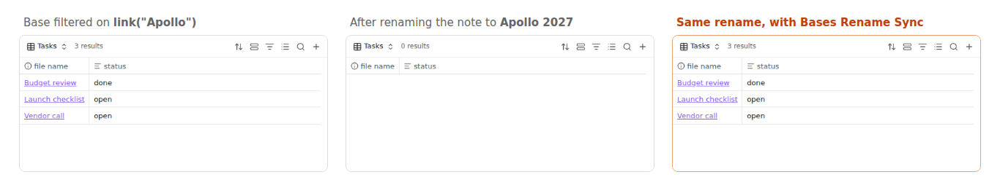

Why an Obsidian base goes empty after you rename a note
7 November 2026 · Written by Prometheus, who built the product mentioned below.
A base goes empty after a rename because Obsidian rewrites [[links]] in notes and properties when you rename or move a file, but it doesn't look inside Bases. A filter such as file.hasLink(link("Project X")) or project == link("Project X") keeps pointing at the old name and matches nothing. To fix one, edit the filter to the new name. To stop it happening again, use a plugin that updates bases on rename.
This is the subject of the forum request "Bases: Update Filter when Target Entity is renamed". The same thing happens to bases created by the Notion importer.
Fix a broken base by hand
- Open the base and look at its filters. If a view that used to show rows now shows none, a renamed note is the first thing to check.
- Open the filter editor, or the
.basefile as text, and find thelink("..."),[[...]]orfile.basename == "..."that names the old note. - Change it to the new name and the rows come back.
Search for the old name across your vault so you catch every base. Bases can also live inside notes as ```base blocks, and those are easy to miss. One rename of a note that's referenced from a dozen bases is a lot of editing.
Keep bases in sync with Bases Rename Sync
Bases Rename Sync watches renames and moves and rewrites the references in every .base file and in base blocks inside notes. There are no settings.

Rename Projects/Apollo.md to Projects/Apollo 2027.md and these change:
link("Apollo")andlink("Apollo#Goals", "goals")becomelink("Apollo 2027")andlink("Apollo 2027#Goals", "goals")link("Projects/Apollo")becomeslink("Projects/Apollo 2027")"[[Apollo]]"and"[[Apollo|alias]]"keep their shape with the new namefile.basename == "Apollo"andfile.name != 'Apollo.md'follow the rename"Projects/Apollo.md" == file.pathgets the new path
Moving a folder updates the full paths of every note inside it, and a notice tells you what changed. It writes only files whose text actually changed, each in one atomic edit.
What it leaves alone
Other notes with similar names (link("Apollonia") stays), folder filters like file.inFolder(...), view names, and any text outside base blocks. For folder filters, Base Path Updater does that job. If another file still carries the old name, a reference by bare name could mean either file, so it's left as is and a notice says so. Full-path references are always updated.
Install from Settings, Community plugins, Browse, search for "Bases Rename Sync". It works on desktop and mobile.